Using column settings
SciCat comes equipped with many useful features and functionalities which enable the user to filter and arrange both their view and exports to suit their needs. This section will describe how to use some of these features along with visual demonstrations to help guide you through the UI.
Where are the column settings
To access the filters you must use the table menu in the top right corner of the tables header
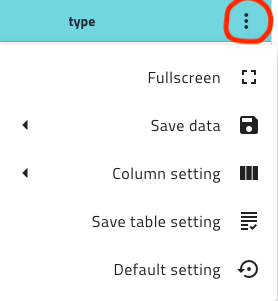
Manipulating the table layout
The initial table for SciCat can contain an abundance of information, but sometimes you might only want to see a specific set of columns information.
Filtering columns
You can use the column settings option which will enable you to see a list of the available columns and checkbox each one you wish to be part of your view.
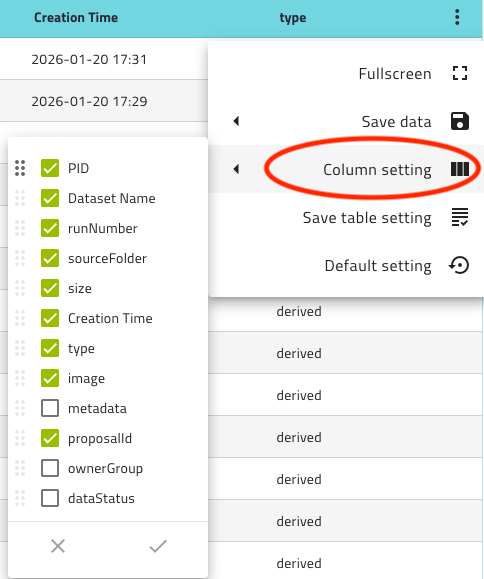
\ To select the columns you want to see, simply click the checkboxes ensuring each column of interest is highlighted by the green tick.\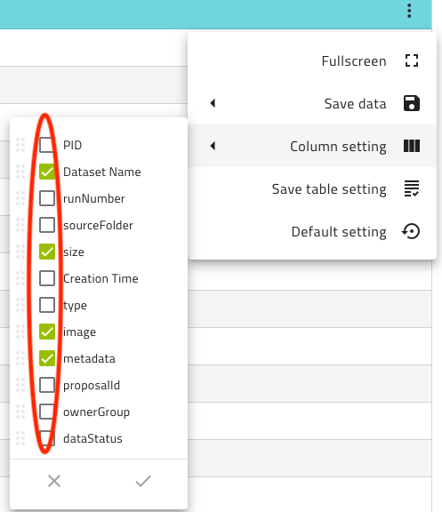
\ Once you've selected all of the columns, apply the changes by clicking on the tick in the bottom right corner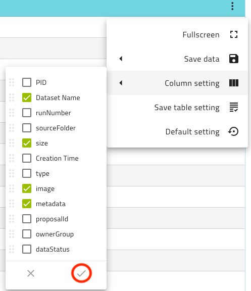
\ Now that you've applied the changes to your settings, your table will reflect only the columns you selected.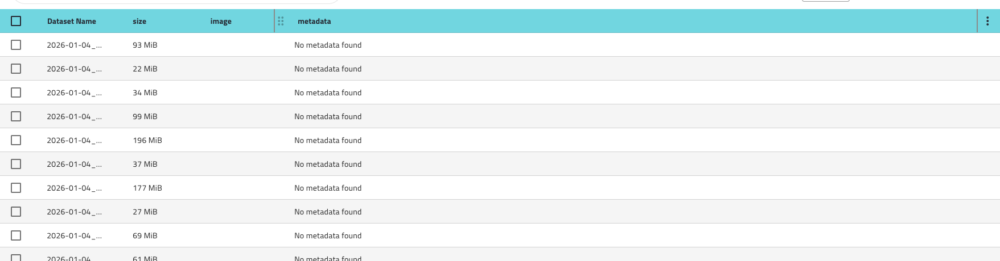
Reorganising columns
Within the SciCat UI, the columns can be reordered by the user simply by accessing the column setting and using the drag option to the left of the column name you wish to move.\
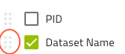
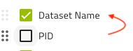
\ All columns have this functionality so you can structure the table however suits you best.Table filter persistence
When making changes to the table, these changes will not automatically persist so the table will revert to its original form if you: - refresh the page - enter into any record and then go back
SciCat has a built in way to make the layout persistent and the default. To make the table always filter to your selected columns, first apply the filters as shown above. Go back into the table menu and select the save table settings option.\
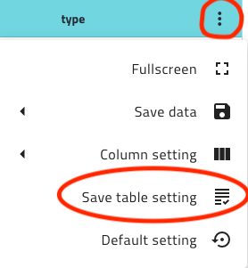
\ This will save the filters to your profile and results in the table formatting you've applied being persistent through refreshes. Note: this process will be required each time you wish to change the default column settingsSaving data from SciCat
The process of saving or exporting data from Scicat is simple, open the table menu, select Save data, choose the output you want.\
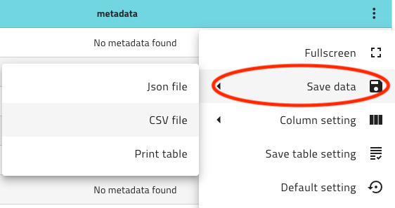
\ Descriptions of the saving behaviour for each of the formats are given below.What gets saved
SciCat outputs only the data in the current page, meaning; If you have multiple pages of data, only the current page will be output to file. Also the method of output chosen, will result in a different level of data being returned so its important to know what you want to get from this extraction.
Saving to CSV
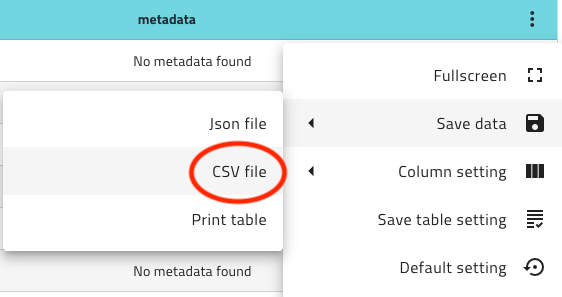
\ This option will return you everything you can see in the table, this includes any filters or ordering that have been applied to the table. So as an output you will get a CSV version of exactly what you have created on the screen. This option is most useful for figure generation or high-level data analysisSaving to JSON
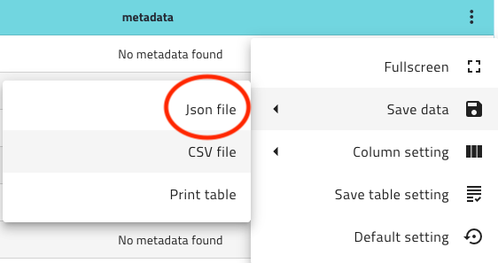
\ The Json option will return you more information as it will save all data related to the records being displayed on that page of the table. This option is very useful for metadata analysis and will provide all fields for each record in the JSON format ready to be read/ingested by a program to perform analysis. Note: The returned data from the JSON option will disregard filters so doesn't just collect information from the selected columns, but it will still only return data for the rows displayed on the current page/Saving only specific records
In SciCat there is also the ability to only save data for manually selected data.
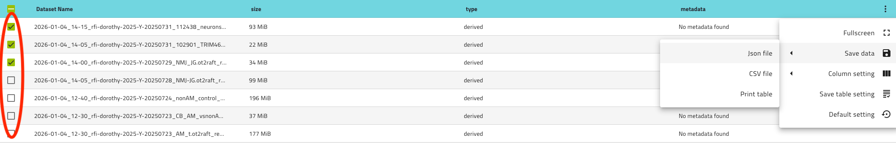
\ This option works for both CSV and JSON format to only return information about these selected records. However, the other aspects of each saving method still apply so CSV will return a snapshot of what you see, and JSON will return all of the data related to just the selected records.